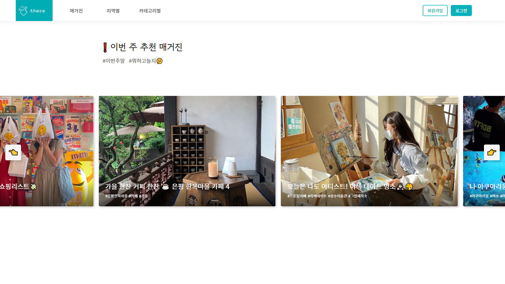

2021
THERE: 서울 핫플레이스 공유 서비스
THERE은 매주 서울의 핫플레이스를 선정하여 사용자들에게 추천하는 매거진 형태의 서비스입니다.
매거진에 선정된 장소에 대해 사용자들이 별점, 리뷰를 남기는 등의 정보 공유가 가능합니다.

사용기술
- JAVA, Spring, JSP, MySQL, JQuery, Bootstrap
- Eclipse, Git, Aquery Tool